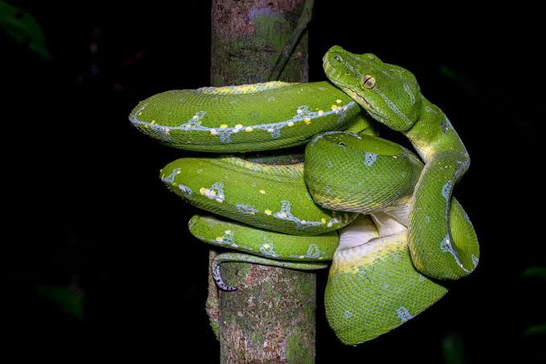
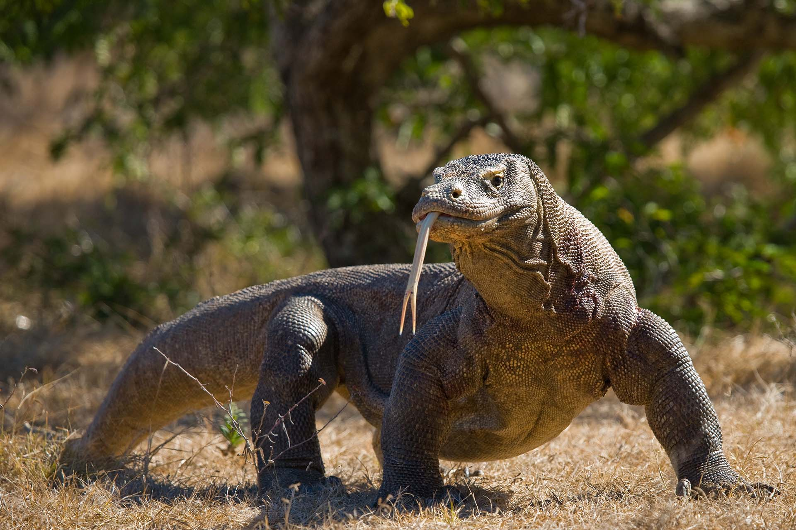
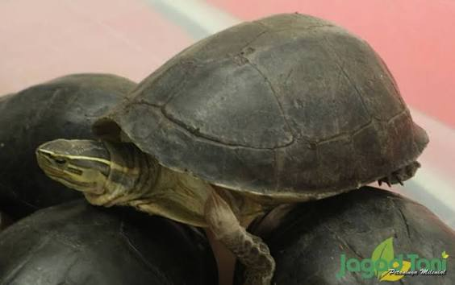
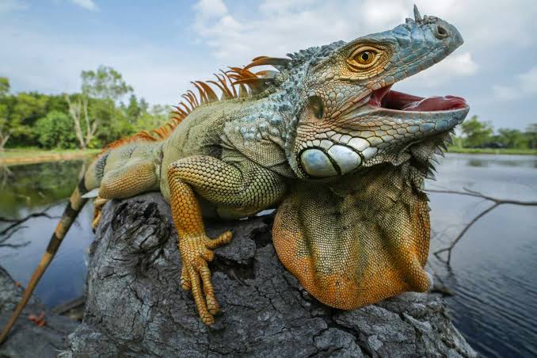
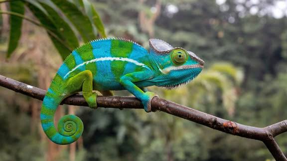
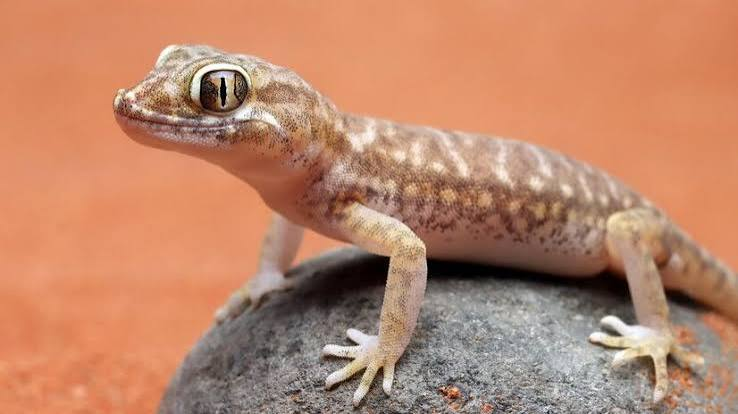
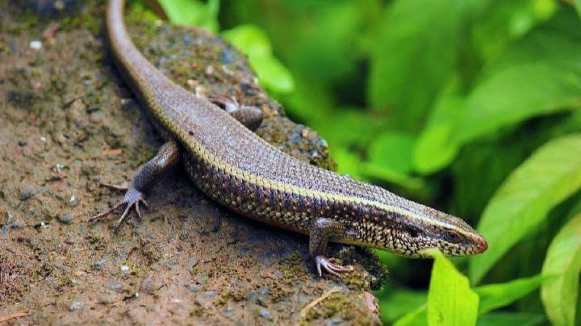

Reptiles Gallery
Mari mengenal berbagai jenis reptil yang ada di dunia!

Buaya
Buaya adalah hewan reptil yang memiliki tubuh besar, kulit bersisik, dan rahang yang kuat. Hewan ini biasanya hidup di sungai, rawa, dan danau. Buaya memiliki kemampuan berenang yang sangat baik dan dapat bertahan lama di dalam air.

Ular
Ular adalah hewan reptil yang memiliki tubuh panjang tanpa kaki dan ditutupi sisik. Hewan ini bergerak dengan cara melata dan dapat ditemukan di hutan, sawah, maupun lingkungan lainnya. Ular menggunakan lidah bercabang untuk membantu mengenali bau di sekitarnya.

Komodo
Komodo adalah reptil terbesar di dunia yang berasal dari Indonesia, khususnya wilayah Nusa Tenggara Timur. Hewan ini memiliki tubuh besar, kulit bersisik, cakar tajam, dan lidah bercabang. Komodo dapat tumbuh hingga sekitar tiga meter panjangnya.

Kura-kura
Kura-kura adalah hewan reptil yang memiliki tempurung keras sebagai pelindung tubuhnya. Hewan ini dapat hidup di darat maupun di air, tergantung jenisnya. Kura-kura dikenal sebagai hewan yang memiliki umur panjang dan beberapa jenisnya dapat hidup hingga lebih dari 100 tahun.

Iguana
Iguana adalah hewan reptil yang memiliki tubuh bersisik, ekor panjang, dan duri kecil di sepanjang punggungnya. Hewan ini banyak ditemukan di wilayah tropis, terutama di Amerika Tengah dan Amerika Selatan. Iguana memiliki kemampuan melihat warna dengan baik dan dapat berenang dengan cukup lincah.

Bunglon
Bunglon adalah hewan reptil yang memiliki tubuh kecil, mata yang dapat bergerak secara terpisah, dan lidah panjang. Hewan ini terkenal karena kemampuannya mengubah warna kulit untuk berkomunikasi dan menyesuaikan diri dengan lingkungan. Bunglon dapat menjulurkan lidahnya dengan sangat cepat untuk menangkap mangsa.

Cicak
Cicak adalah hewan reptil berukuran kecil yang sering ditemukan di dinding dan langit-langit rumah. Hewan ini memiliki kaki dengan bantalan khusus yang membantunya menempel dan berjalan di permukaan yang licin. Cicak juga memiliki kemampuan memutuskan ekornya ketika merasa terancam.

Kadal
Kadal adalah hewan reptil yang memiliki empat kaki, ekor panjang, dan kulit bersisik. Hewan ini biasanya ditemukan di hutan, kebun, dan daerah berbatu. Beberapa jenis kadal memiliki kemampuan melepaskan ekornya ketika menghadapi ancaman dari predator.